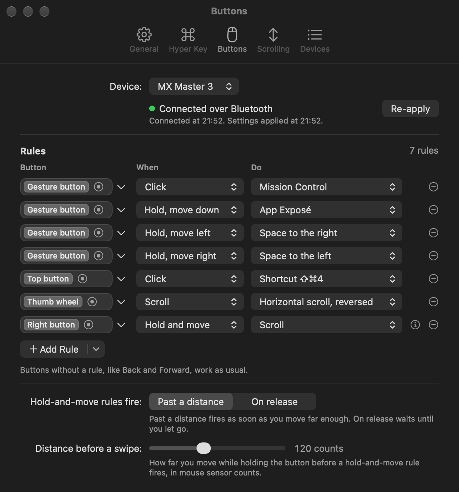
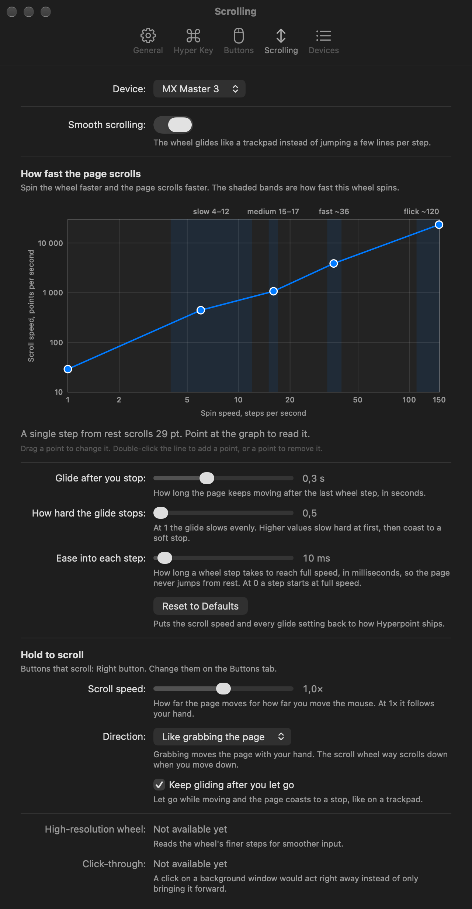

A 1.2 MB menu bar app for your Mac's mouse and keyboard.
One key holds ⌘⌥⇧⌃. Shortcuts no app has taken.
Mission Control, Spaces, any shortcut.

Eased pulses, sized by a curve you drag.

Replace Logi Options+. Hyper key included.